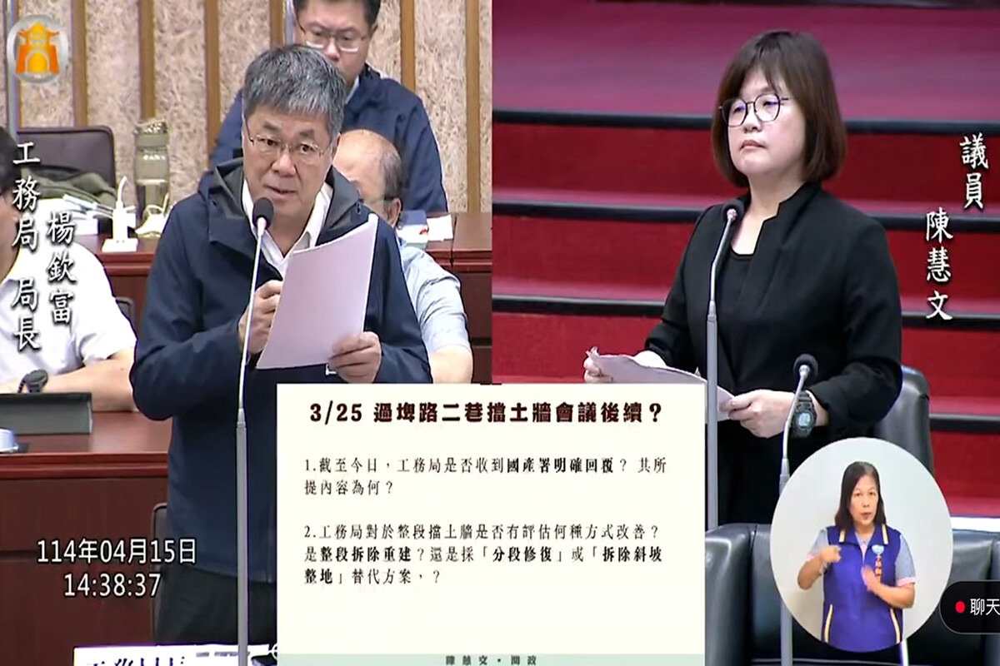

背景與說明
鳳山區過埤路2巷為過埤里居民日常進出的聯外道路，鄰近邊坡擋土牆於2021年6月豪雨期間嚴重崩塌滑落，泥沙與巨石阻斷道路，嚴重威脅下方民宅與人車往來安全。市府雖第一時間以臨時鋼軌樁進行緊急支撐加固並搶通單線通行，但因邊坡涉及國有財產署管轄土地，跨機關土地權限、經費分攤與水土保持程序繁複，導致永久性修復工程歷時協商。
在取得修復經費後，陳慧文進一步緊盯現場施工障礙排除進度，積極協調台灣電力公司優先辦理施工界面牴觸電桿之移設作業，以利重型機具進場施工。陳慧文將持續督促道工處與承包團隊加緊趕工，推動永久擋土牆如質如期完工驗收，為過埤里鄉親構築一道堅固穩定的安全防線，徹底消除暴雨邊坡滑動隱患。


推動歷程
重要進度
大雨造成擋土牆崩塌
過埤路2巷擋土牆在大雨後崩塌、道路中斷，市府進場緊急搶修。
市政總質詢要求建立專責處理機制
陳慧文要求市府加強擋土牆支撐、改善替代道路，並釐清國產署與市府責任。
完成臨時安全措施並恢復通行
市府完成臨時加固、護欄與警示等安全措施，恢復道路通行；永久修復仍未完成。
市府跨機關協調永久修復責任
工務局邀集國產署南區分署、水利局及鳳山、大寮區公所協調，請土地管理者國產署研議先行復原。
總質詢再追永久修復進度
陳慧文再次要求市府加速改善過埤路2巷擋土牆，持續追蹤永久修復方案。
國產署原則同意工程概算與代辦方向
跨機關協調後，國產署南區分署原則同意工程概算及由市府代辦施作的方向。
道工處答覆國產署已編列500萬元
工務部門質詢中，道工處表示國產署已編列500萬元，當時預定最快4月底進場，並以汛期前完成為目標。
進入施工前協調
施工前協調進一步處理道路封閉、電桿遷移與細部設計等工程準備事項。
電桿移設延宕影響工程進場